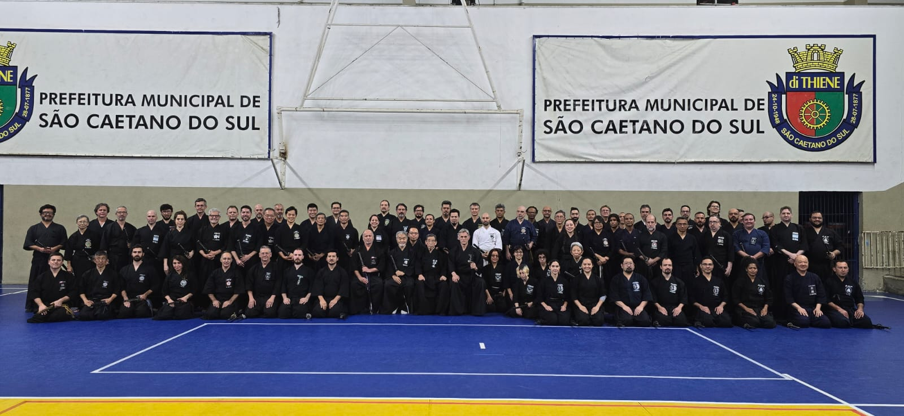
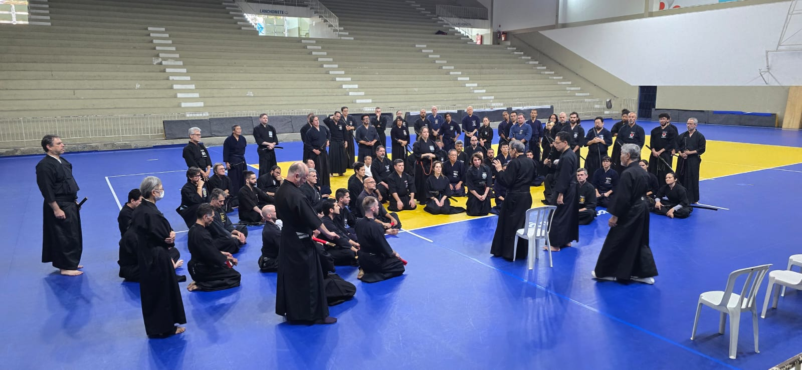
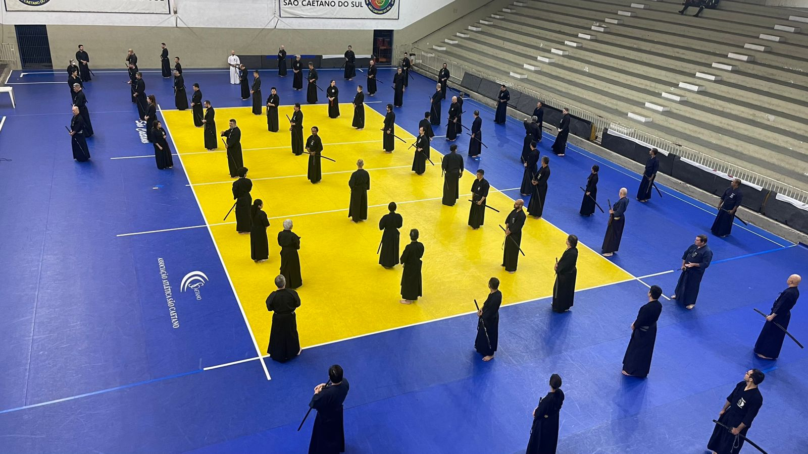
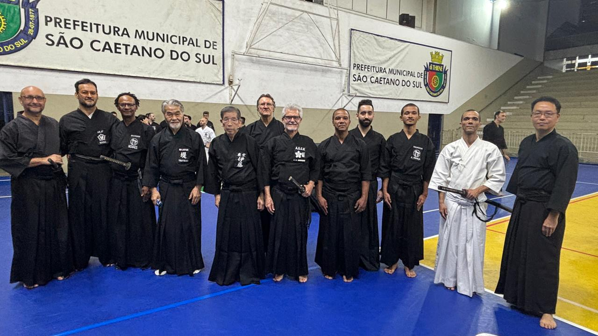
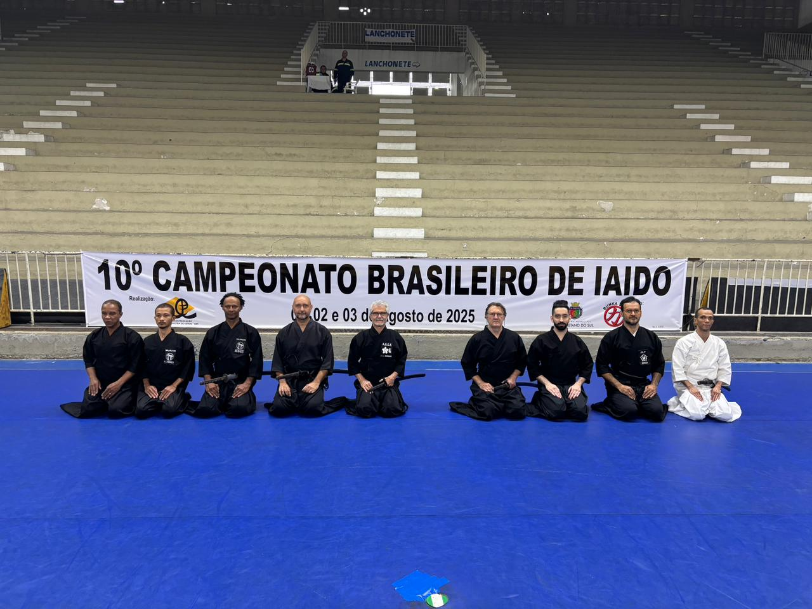
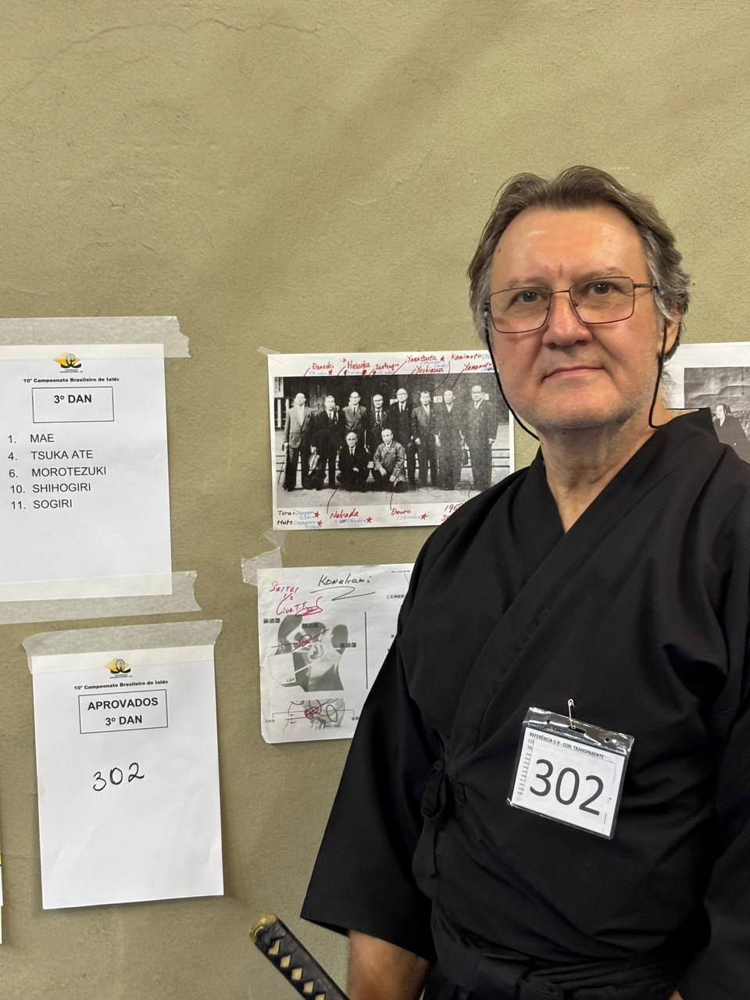
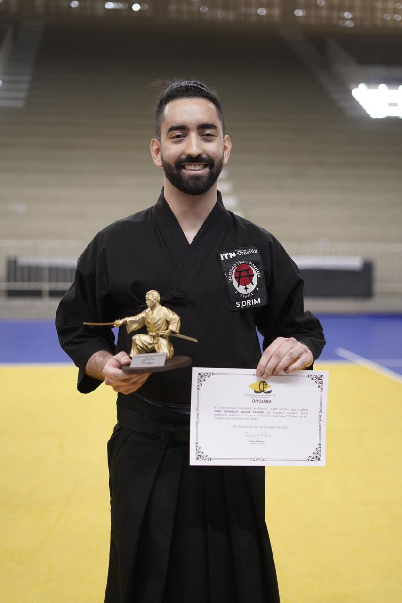

Notícias
10° Campeonato Brasileiro de Iaido 01/08/2025 a 03/08/2025 - São Caetano do Sul, São Paulo
Foto com todos os participantes do 10° Campeonato Brasileiro de Iaido.
11/08/2025
Nos dias 01, 02 e 03 de agosto, a Genbukan Brasil marcou presença no 10° Campeonato Brasileiro de Iaido, com seminários de aprofundamento técnico. Além do aprendizado, houve também o fortalecimento de laços entre praticantes de Iaido de todo o Brasil.
Nossos instrutores, Renato Alcantara e José Carlos de Anchieta, juntamente com os demais membros da Genbukan Brasil, estiveram presentes.
Além dos exames e competições, foram ministrados seminários técnicos conduzidos pelos Senseis:Tomoharu Ito Sensei, Kyoshi 8° Dan em Iaido e 8° Dan em Kendo e Toshihiko Tsutsumi Sensei, Renshi 7° Dan em Iaido e 5° Dan em Kendo.
Participantes e os resultados dos exames e competições dos Membros da Genbukan: Grupo Membro Salvador (BA): Equipe: Renato Alcântara - 4° Dan; Marcos Novaes - 3° Dan; Henrique Lima - 2° Dan (3⁰ lugar na competição de 2° Dan); André França – aprovado 1° Dan (3⁰ lugar na competição de 1° Kyu); Grupo Membro João Pessoa (PB) - Associação de Kendo de João Pessoa: Ticiano Rocha - aprovado 2° Dan; Associação de Kendo do Pará (PA): Equipe: Cláudio Temporal - 3º Dan; Masayoshi Itó - aprovado 2° Dan (3° lugar na competição de 1° Dan); Xavico Kzan - aprovado 2° Dan; Jessica Ito - aprovada 1° Kyu; Grupo Membro São Carlos (SP) - ASCK, Associação São Carlos de Kendo e Iaido: Lúcio Kaiti Kawano - 2º Dan; Carolina Akemi Martins Morita Nakahara - 1° Kyu (3° lugar na competição de aspirantes); Jonas Thadeu Castilho - 2º Dan; Luiz Fernando Netto - 1º Dan; Harumi Nakahara - 2º Dan. Grupo Membro Brasília (DF): Aramis Mantovani – 3° Dan; João Sidrim – 2° Dan (1° lugar na competição de 1° Dan);
Seminário durante o 10° Campeonato Brasileiro de Iaido.
Participantes do 10° Campeonato Brasileiro de Iaido.
Foto com os Senseis: Tomoharu Ito Sensei e Toshihiko Tsutsumi Sensei.
Alguns membros da Genbukan que participaram do 10° Campeonato Brasileiro de Iaido.
Aramis Mantovani – 3° Dan.
João Sidrim – 2° Dan (1° lugar na competição de 1° Dan).